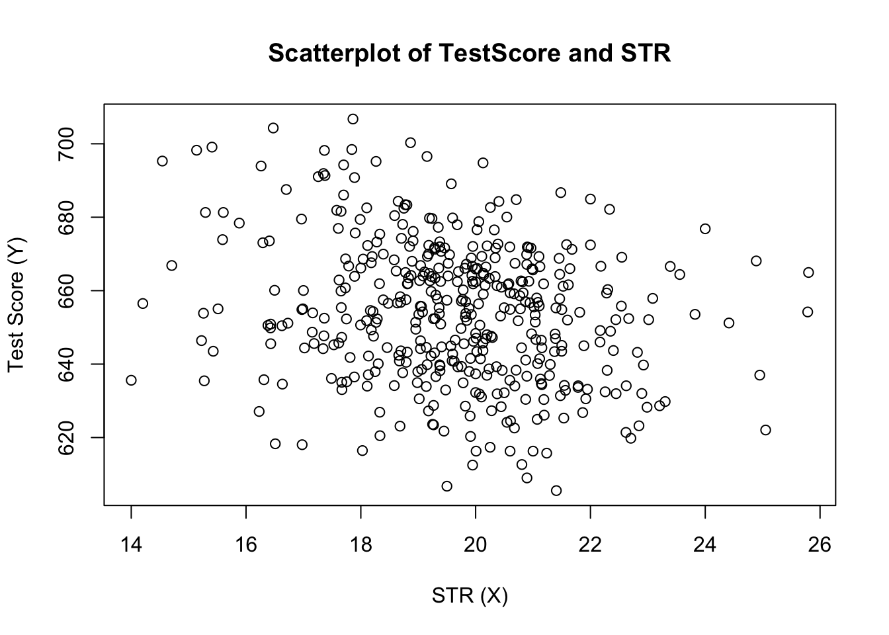

5.4 Heteroskedasticity and Homoskedasticity
All inference made in the previous chapters relies on the assumption that the error variance does not vary as regressor values change. But this will not necessarily be the case in most empirical applications.
Key Concept 5.4
Heteroskedasticity and Homoskedasticity
We say that the error term of our regression model is homoskedastic if the variance of the conditional distribution of \(u_i\) given \(X_i\), \(Var(u_i|X_i=x)\), is constant for all observations in our sample \[ \text{Var}(u_i|X_i=x) = \sigma^2 \ \forall \ i=1,\dots,n. \]
If instead there is dependence of the conditional variance of \(u_i\) on \(X_i\), the error term is said to be heteroskedastic. We then write \[ \text{Var}(u_i|X_i=x) = \sigma_i^2 \ \forall \ i=1,\dots,n. \]
- Homoskedasticity is a special case of heteroskedasticity.
For a better understanding of heteroskedasticity, we generate some bivariate heteroskedastic data, estimate a linear regression model and then use boxplots to depict the conditional distributions of the residuals.
# load scales package for custom color opacities
library(scales)
# Genrate some heteroskedastic data
set.seed(123)
x <- rep(c(10,15,20,25),each=25)
e <- rnorm(100, sd=12)
i <- order(runif(100, max=dnorm(e, sd=12)))
y <- 720 - 3.3 * x + e[rev(i)]
# Estimate the model
mod <- lm(y ~ x)
# Plot the data
plot(x=x,
y=y,
main="An Example of Heteroskedasticity",
xlab = "Student-Teacher Ratio",
ylab = "Test Score",
cex = 0.5,
pch = 19,
xlim = c(8,27),
ylim = c(600,710)
)
# Add the regression line to the plot
abline(mod, col="darkred")
# Add boxplots to the plot
boxplot(y ~ x,
add = TRUE,
at = c(10,15,20,25),
col = alpha("gray", 0.4),
border = "black"
)
For this artificial data it is straightforward to see that we face unequal conditional error variances. Specifically, we observe that the variance in test scores (and therefore the variance of the errors committed) increases with the student teacher ratio.
A Real-World Example for Heteroskedasticity
Think about the economic value of education: if there would not be an expected economic value-added to receiving education at university, You probably would not be reading this script right now. A starting point to empirical verification of such a relation exists is to have data on individuals that are in an employment relationship. More precisely, we need data on wages and education in order to work with a model like
\[ wage_i = \beta_0 + \beta_1 \cdot education_i + u_i. \]
What can be presumed about this relation? It is likely that, on average, higher educated workers earn more money than workers with less education so we expect to estimate an upward sloping regression line.
Also it seems plausible that workers with better education are more likely to meet the requirements for the well-paid jobs. However, workers with low education will have no shot at those well-paid jobs. Therefore it seems plausible that the distribution of earnings spreads out as education increases. In other words: we expect that there is heteroskedasticity!
To verify this empirically we may use real data on hourly earnings and the number of years of education of employees. Such data can be found in CPSSWEducation. This data set is part of the package AER and stems from the Current Population Survey (CPS) which is conducted periodically by the Bureau of Labor Statistics in the US.
The subsequent code chunks demonstrate how to load the data into R and how to produce a plot in the fashion of figure 5.3 in the book.
# load package and attach data
library(AER)
data("CPSSWEducation")
attach(CPSSWEducation)
# get an overview
summary(CPSSWEducation)## age gender earnings education
## Min. :29.0 female:1202 Min. : 2.137 Min. : 6.00
## 1st Qu.:29.0 male :1748 1st Qu.:10.577 1st Qu.:12.00
## Median :29.0 Median :14.615 Median :13.00
## Mean :29.5 Mean :16.743 Mean :13.55
## 3rd Qu.:30.0 3rd Qu.:20.192 3rd Qu.:16.00
## Max. :30.0 Max. :97.500 Max. :18.00# estimate a simple regression model
labor_model <- lm(earnings ~ education)
# plot observations and add the regression line
plot(education,
earnings,
ylim = c(0,150)
)
abline(labor_model, col="steelblue", lwd=2)
From inspecting the plot we can tell that the mean of the distribution of earnings increases with the level of education. This is also suggested by formal analysis: the estimated regression model stored in labor_mod asserts that there is a positive relation between years of education and earnings.
labor_model##
## Call:
## lm(formula = earnings ~ education)
##
## Coefficients:
## (Intercept) education
## -3.134 1.467The estimated regression equation states that, on average, an additional year of education increases a workers hourly earnings by about \(\$ 1.47\). Once more we use confint() to obtain a \(95\%\) confidence interval for both regression coefficients.
confint(labor_model)## 2.5 % 97.5 %
## (Intercept) -5.015248 -1.253495
## education 1.330098 1.603753Since the intervall is \([1.33, 1.60]\) we can reject the hypothesis that the coefficient on education is zero at the \(5\%\) level.
What is more, the plot indicates that there is heteroskedasticity: if we assume the regression line to be a reasonably good representation of the conditional mean function \(E(earnings_i\vert education_i)\), the dispersion of hourly earnings around that function cleary increases with the level of education, i.e. the variance of the distribution of earnings increases. In other words: the variance of the residuals increases with the years of education so that the regression errors are heteroskedastic.
This example makes a case that it is doubtful to assume homoskedasticity in many economic applications.
Should We Care About Heteroskedasticity?
To answer this question, let us see how the variance of \(\hat\beta_1\) is computed under the assumption of homoskedasticity. In this case we have
\[ \sigma^2_{\hat\beta_1} = \frac{\sigma^2_u}{n \cdot \sigma^2_X} \tag{5.5} \]
which is a simplified version of the general equation (4.1) presented in Key Concept 4.4. See Appendix 5.1 of the book for details on the derivation. The summary() function in R estimates (5.5) by
\[ \overset{\sim}{\sigma}^2_{\hat\beta_1} = \frac{SER^2}{\sum_{i=1}^n (X_i - \overline{X})^2} \ \ \text{where} \ \ SER=\frac{1}{n-2} \sum_{i=1}^n \hat u_i^2. \]
Thus summary() estimates the homoskedasticity-only standard error
\[ \sqrt{ \overset{\sim}{\sigma}^2_{\hat\beta_1} } = \sqrt{ \frac{SER^2}{\sum(X_i - \overline{X})^2} }. \]
This in fact is an estimator for the standard deviation of the estimator \(\hat{\beta}_1\) that is inconsistent for the true value \(\sigma^2_{\hat\beta_1}\) when there is heteroskedasticity. The implication is that \(t\)-statistics computed in the manner of Key Concept 5.1 do not have a standard normal distribution, even in large samples. This issue may invalidate inference drawn when using the previously treated tools for hypothesis testing: we should be cautious when making statements about the significance of regression coefficients on the basis of \(t\)-statistics as computed by summary() or confidence intervals produced by confint() if it is doubtful for the assumption of homoskedasticity to hold!
We will now use R to compute the homoskedasticity-only standard error estimate for \(\hat{\beta}_1\) in the test score regression model linear_model by hand and see if it matches the value produced by summary().
# Store model summary in 'mod'
model <- summary(linear_model)
# Extract the standard error of the regression from model summary
SER <- model$sigma
# Compute the variation in 'size'
V <- (nrow(CASchools)-1) * var(CASchools$STR)
# Compute the standard error of the slope parameter's estimator and print it
SE.beta_1.hat <- sqrt(SER^2/V)
SE.beta_1.hat## [1] 0.4798255# Use logical operators to see if the value computed by hand matches the one provided # in mod$coefficients. Round estimates to four decimal places
round(model$coefficients[2,2], 4) == round(SE.beta_1.hat, 4)## [1] TRUEIndeed, the estimated values are equal.
Computation of Heteroskedasticity-Robust Standard Errors
Cosistent estimation of \(\sigma_{\hat{\beta}_1}\) under heteroskedasticity is granted when the following robust estimator is used.
\[ SE(\hat{\beta}_1) = \sqrt{ \frac{ \frac{1}{n-2} \sum_{i=1}^n (X_i - \overline{X})^2 \hat{u}_i^2 }{ \left[ \frac{1}{n} \sum_{i=1}^n (X_i - \overline{X})^2 \right]^2} } \tag{5.6} \]
Standard error estimates computed this way are also referred to as Eicker-Huber-White standard errors. It can be quite cumbersome to do this calculation by hand. Luckily, there are R function for that purpose. A convenient one, named vcovHC() is part of the sandwich package. This function can compute a variety of standard error estimators. The one brought forward in (5.6) is computed when the argument type is set to "HC0".
Let us now compute robust standard error estimates for the coefficients in linear_model.
# load the sandwich package
library(sandwich)
# compute robust standard error estimates
vcov <- vcovHC(linear_model, type = "HC0")
vcov## (Intercept) STR
## (Intercept) 106.908469 -5.3383689
## STR -5.338369 0.2685841The output of vcovHC() is the variance-covariance matrix of coefficient estimates. We are interested in the square root of the diagonal elements of this matrix since these values are the standard error estimates we seek.
When we have k > 1 regressors, writing down the equations for a regression model becomes very messy. A more convinient way to denote and estimate so-called multiple regression models is matrix algebra. This is why functions like vcovHC() produce matrices. In the simple linear regression model, the variances and covariances of the coefficient estimators can be gathered in the variance-covariance matrix
\[\begin{equation} \text{Var} \begin{pmatrix} \hat\beta_0 \\ \hat\beta_1 \end{pmatrix} = \begin{pmatrix} \text{Var}(\hat\beta_0) & \text{Cov}(\hat\beta_0,\hat\beta_1) \\ \text{Cov}(\hat\beta_0,\hat\beta_1) & \text{Var}(\hat\beta_1) \end{pmatrix} \end{equation}\]which is a symmetric matrix. So vcovHC() gives us \(\widehat{\text{Var}}(\hat\beta_0)\), \(\widehat{\text{Var}}(\hat\beta_1)\) and \(\widehat{\text{Cov}}(\hat\beta_0,\hat\beta_1)\) but most of the time we are interested in the diagonal elements of the estimated matrix.
# compute the square root of the diagonal elements in vcov
robust_se <- sqrt(diag(vcov))
robust_se## (Intercept) STR
## 10.339655 0.518251Now assume we want to generate a coefficient summary as provided by summary() but with robust standard error estimates for the coefficient estimators, robust \(t\)-statistics and corresponding \(p\)-values for the regression model linear_model. This can be done using coeftest() from the package lmtest, see ?coeftest. Further we specify in the argument vcov. that vcov, the Eicker-Huber-White estimate of the variance matrix we have computed before should be used.
# We invoke the function `coeftest()` on our model
coeftest(linear_model, vcov. = vcov)##
## t test of coefficients:
##
## Estimate Std. Error t value Pr(>|t|)
## (Intercept) 698.93295 10.33966 67.597 < 2.2e-16 ***
## STR -2.27981 0.51825 -4.399 1.382e-05 ***
## ---
## Signif. codes: 0 '***' 0.001 '**' 0.01 '*' 0.05 '.' 0.1 ' ' 1We see that values reported in the column Std. Error equal the ones received using sqrt(diag(vcov)).
How severe are the implications of using homoskedasticity-only standard errors in the presence of heteroskedasticity? The answer is: it depends. As mentioned above we may face the risk of drawing wrong conclusions when conducting significance tests.
Let us illustrate this by generating another example of a heteroskedastic data set and use it to estimate a simple regression model. We take
\[ Y_i = \beta_1 \cdot X_i + u_i \ \ , \ \ u_i \overset{i.i.d.}{\sim} N(0,0.36 \cdot X_i^2) \]
with \(\beta_1=1\) as the data generating process. The assumption of homoskedasticity is violated since the variance of the errors is a non-linear increasing function of \(X_i\) but the errors have zero mean and are i.i.d. such that the assumptions made in Key Concept 4.3 are not violated. As before, the true conditional mean function we are interested in estimating is
\[ E(Y_i\vert X_i) = X_i. \]
# set random seed
set.seed(21)
# generate heteroskedastic data
X <- 1:1000
Y <- rnorm(n = 1000, mean = X, sd = 0.6*X)
# estimate a simple regression model
reg <- lm(Y ~ X)We plot the data and add the regression line.
# plot the data
plot(X, Y, pch = 19, col="steelblue", cex = 0.8)
# add the regression line to the plot
abline(reg, col = "darkred", lwd = 1.5)
The plot clearly shows that the data are heteroskedastic as the variance of \(Y\) grows with \(X\). We continue by conducting a significance test of the (true) null hypothesis \(H_0: \beta_1 = 1\) twice, once using the homoskedasticity-only standard error formula and once with the robust version (5.6). An idiomatic way to do this in R is the function linearHypothesis() from the package car, see ?linearHypothesis. It allows to test linear hypotheses about parameters in linear models in a similar way as done with a \(t\)-statistic and offers various robust covariance matrix estimators. We test by comparing the tests’ \(p\)-values to the significance level of \(5\%\).
linearHypothesis() computes a test statistic that follows an \(F\) distribution under the null hypothesis. We will not loose too much words on the theory behind it at this time. In general, the core idea of the \(F\) test is to compare the fit of different models. When testing a hypothesis about a single coefficient using a \(F\) test, one can show that the test statistic is simply the square of the corresponding \(t\)-statistic:
\[ F = t^2 = \frac{\hat\beta_i - \beta_{i,0}}{SE(\hat\beta_i)} \sim F_{1,n-k-1} \]
In linearHypothesis(), the hypothesis must be provided as a string. The function returns an object of class anova which contains further information on the test that can be accessed using the $ operator. For example, we can obtain the test’s \(p\)-value by adding $‘Pr(>F)’ right behind the function call.# test using default standard error
linearHypothesis(reg, hypothesis.matrix = "X = 1")$'Pr(>F)'[2] < 0.05## [1] TRUE# test using robust standard error
linearHypothesis(reg, hypothesis.matrix = "X = 1", white.adjust = "hc0")$'Pr(>F)'[2] < 0.05## [1] FALSEThis is a good example of what can go wrong if we do not care for heteroskedasticity: for the data set at hand the default method rejects the null hypothesis \(\beta_1 = 1\) although it is true. Using the robust standard error though the test does not reject the null. Of course we could argue that this is just a coincidence and both tests are equally well in maintaining the type I error rate of \(5\%\). This can be further investigated by computing Monte Carlo estimates of the rejection frequencies of both tests on the basis of a large number of random samples. We proceed as follows:
- initialize vectors
tandt.robas typenumericwith length \(10000\). - Using a
for()loop, we generate \(10000\) heteroskedastic random samples of size \(1000\), estimate the regression model and check whether the tests wrongly reject the null at the level of \(5\%\) using comparison operators. The results are stored in the respective vectorstandt.rob. - After the simulation, we compute the fraction of rejections for both tests.
# initialize vectors t and t.rob
t <- numeric(10000)
t.rob <- numeric(10000)
# loop sampling and estimation
for (i in 1:10000) {
# sample data
X <- 1:1000
Y <- rnorm(n = 1000, mean = X, sd = 0.6*X)
# estimate regression model
reg <- lm(Y ~ X)
# homoskedasdicity-only significance test
t[i] <- linearHypothesis(reg, "X = 1")$'Pr(>F)'[2] < 0.05
# robust significance test
t.rob[i] <- linearHypothesis(reg, "X = 1", white.adjust = "hc0")$'Pr(>F)'[2] < 0.05
}
# compute fraction of rejections
cbind(t = sum(t), t.rob = sum(t.rob)) / 10000## t t.rob
## [1,] 0.0762 0.0524The results show that we face an increased risk of falsely rejecting the null using the homoskedasticity-only standard error for the testing problem at hand: with the common standard error estimator, \(7.62\%\) of all tests reject the null hypothesis falsely. In contrast, with the robust test statistic we are close to the nominal level of \(5\%\).